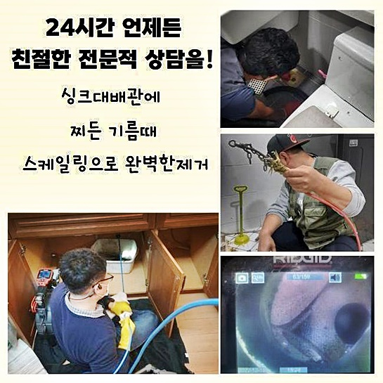
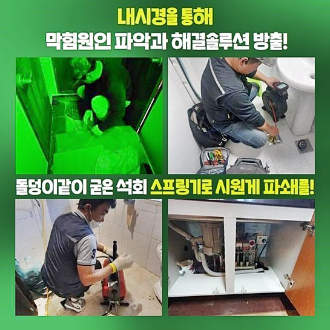
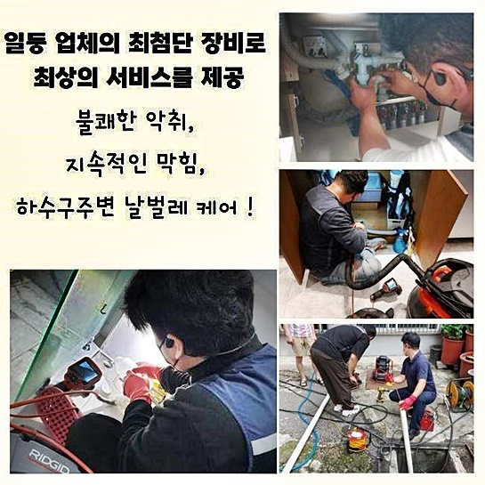
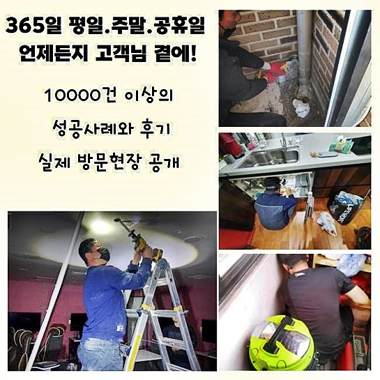
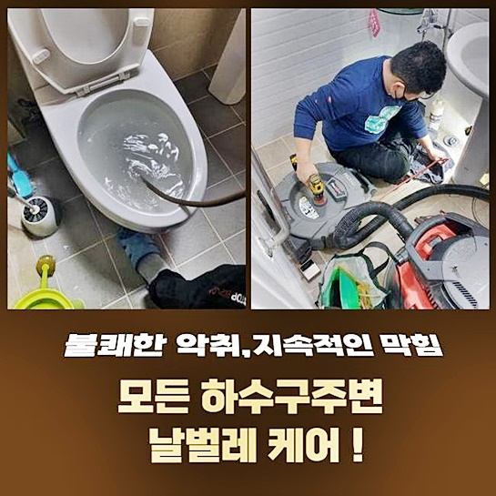
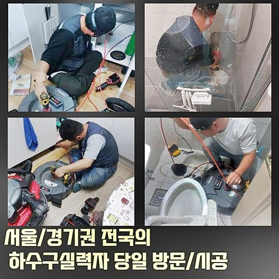
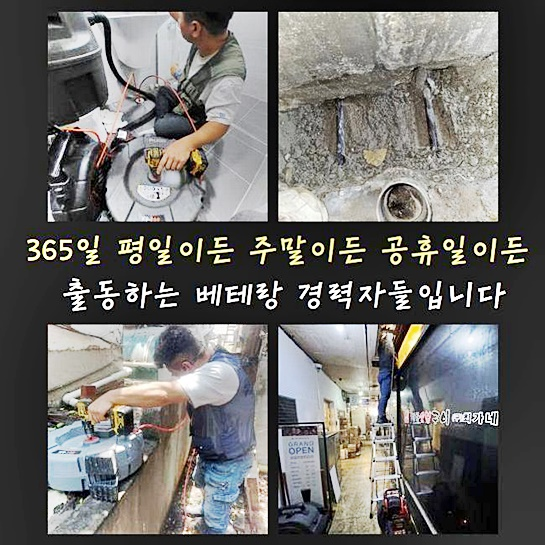

🏠 용인 유림동대변기막힘 백암면 하수구뚫어주는업체 배관전문
용인시 처인구 배관막힘 전문 시공 후기

📋 작업 개요
- 위치: 용인시 처인구, 수원시 영통구, 화성시 동탄
- 서비스 유형: 배관막힘, 고압세척, 내시경점검
- 작업 일시:
- 업체명: 하수구수사대 (010-5615-2118)
🔍 문제 상황
용인 유림동대변기막힘 백암면 하수구뚫어주는업체 배관전문
배수관이 완전히 막히게 되었다면 보통의 도구로는 해결이 쉽지 않습니다
꽉 막힌 배관은 단순하게 물리적 방식으로 뚫는 것만으로는 해결이 안되기 때문에 전문성 있는 조치가 중요합니다
배관이 꽉 막히게 되면 물이 조금도 흐르지 않아서 집이나 직장에서 심한 불편감을 불러올 수 있게됩니다
그러므로 이런 상태를 한꺼번에 제대로 수리할 수 있는 전문기술자를 호출하여 처리하는게 요구됩니다
하수관로 막힘사태는 시간이 지체될수록 더욱 심각해질 수 있으므로 빠르고 확실한 수리가 요구됩니다
성의없이 대강 뚫었다가는 결국 곧 똑같은 상황을 재차 반복해야 할 것으로 예상됩니다
이처럼 지속적인 사태는 노력과 비용들을 헛되이 만들며 더 심각한 문제를 발생시킬 수 있습니다
이번 경우는 하수배관에 막힘이 생겼다고 전화를 주셨어요
의뢰자분은 배수구 고압세척작업 대금에 대해 걱정이 많아 문제점을 확인해 본 후 답을 드렸습니다
금액적인 문제들은 몹시 주요한 검토항목이라서 저희의 경우 고객의 재정 범위 내에서 최고의 방안을 적용하고자 전력을 다하였습니다
감사하게도 생각하신 예산액 내에서 가능하리라 결론을 내리셔서 수리를 의뢰하기로 선택하였습니다
배수관 물이 내려가지 않는 상황이 생기면 우선 어째서 이 같은 문제들이 발생했는지 점검하여야 합니다
평범하게 외적인 현상을 해결하는 것 보단 본질적인 원인을 발견하는 것이 필요로 합니다
이를 처리하려면 무슨 해결책을 활용할 것인지 계획해보고 진행해야 합니다
사태의 이유를 확실히 알지 못한 채로 일시적인 방법으로 해결한다면 같은 유형의 문제들이 다시 발생할 가능성이 많습니다
이런 땐 육안으로 보이는 지점만 수리한다고 해서 문제가 없어지는 것이 아니예요

🔎 원인 분석
💡 전문가 진단: 정밀 진단 장비를 사용하여 슬러지의 고착 여부를 판명하고 타격/세척 작업을 실시했습니다.
하수관 설비형태와 상황의 근원을 전반적으로 확인하여 최고의 방안을 발견해야 합니다
저층의 창고시설과 하수구가 이어진 상태였는데 맨홀 부근이 막히면서 이 지점이 역류하여서 난리가 났습니다
역류 문제가 생기면 생활에 어려움을 유발할 뿐만 아니라 위생상의 문제와 경제적 손실을 야기할 수 있습니다
의뢰인에게 앞뒤 상황에 대해 듣고나서 막힘을 해결하고자 기구를 셋팅했습니다
준설 시공차에서 기구들을 준비하고 저층으로 이동한 후 현장을 살펴보았습니다
상황이 급박하더라도 왜 이렇게 되었는지 이유들을 확인한 후 착수해야합니다
장애가 나타난 원인들을 분명하게 조사해야 성공적인 수리가 가능해요
카메라 내시경으로 조사한 결과 맨홀 안에 물이 흐르지 않았습니다
이 경우 어딘가에서 막혀있다는 것을 나타냅니다 물이 지나가지 않게되면 물이 차게 되어 마침내 역류가 일어납니다
문제는 오수받이가 곳곳에 있어서 어디에서 발생했는지 짚어내기 까다로웠습니다
이런 경우에는 개별적으로 현상을 거슬러 올라가며 원인을 알아내고 있어요
이런 경우에는 역방향으로 확인하면서 고온과 고압의 세척작업으로 문제해결이 가능해요
고온과 고압으로 하는 청소는 강한 물줄기로 하수배관 내의 오염물을 제거하는 최적의 방식입니다
준설 시공차에서 준비된 고압 분사기를 사용하여 불순물을 제거하는 작업을 진행했어요
고압력의 노즐을 활용해 강한 물살로 오염물질을 갈아내고 세척합니다
역류가 발생할만큼 단단하게 막힌 상태였던 탓에 여러번에 걸쳐 작업한들 해결하기가 어려웠습니다
막힘이 심한 오염물은 강한 수압과 되풀이되는 작업을 통해 없앨 수 있습니다
저희는 계속되는 시도끝에 결국에는 오염물질을 없앨 수 있었습니다

🔧 작업 과정
반복된 노력 끝에 드디어 막힌지점을 해결할 수 있었어요
기름덩이와 이물질들이 한가득 흘러나오게 되었습니다
이러한 찌꺼기는 하수관을 종종 막아버리는 주요한 이유입니다
고객께서 전하시기를 집을 짓고 나서 한 순간도 막힌 적이 없었기에 그냥 지내왔다고 하셨어요
긴 시간동안 쌓인 오염물은 결국엔 심각한 문제를 만들어냅니다
장기간 퇴적된 오염물이 모여 역류하게 된 것입니다
누적된 잔여물과 슬러지는 물의 흐름을 방해해 최종적으로 역류현상을 만듭니다
수시로 내시경 카메라 장비를 사용해 배수관 작업 경과를 확인했어요
내시경 카메라 장비는 배수관 안쪽의 상황들을 정밀하게 점검할 수 있는 필수장치입니다
큰 조각들을 쉽게 치우면 되는데 파이프에 달라붙은 이물질은 잘못 제거하게 되면 하수관에 손상이 가므로 주의깊게 일을 처리했습니다
관로에 충격이 가면 심각한 손상이 유발될 수 있어 신경을 써야합니다
저희 전문팀은 꼼꼼한 서비스를 통해 합당한 금액으로 하수관 고압청소을 진행하고 있습니다
확실한 서비스와 적정 수리비로 고객 만족을 향상시키는 주요 항목입니다
두번째 층의 입상배관과 맨 아래층의 배수관을 체크해보니 키친타올들이 가득 쌓여있었습니다
키친타올은 하수배관에 심각한 막힘을 발생시킬 수 있는 가장 흔한 요인 중 한가지입니다
키친타올의 경우 하수관에 넣으면 문제가 되기에 고객님들께 주의하시기를 요청했습니다
물티슈는 시간이 지나도 분해되지 않기 때문에 배수구를 흔히 막게됩니다
모든 공정이 마무리 한 후 내시경 기기를 활용하여 다시 한번 안쪽 상황을 살펴보았습니다
시공을 마치고 나서도 배관을 체크하는건 현상이 확실하게 제거됐는지 점검하는 필수적인 프로세스입니다
오염물이 모두 없어져서 하수관이 원활하게 물이 흐르는 것을 파악했습니다
배수관이 원활히 통수가 되면 이젠 폐수가 차오르지 않습니다
고객분께도 작업 전과 후의 상황을 안내해드렸고 이젠 철저히 관리해보겠다는 말을 전해 들었습니다
의뢰인께 작업 전후 상황을 설명해서 신뢰도를 구축하였습니다
마무리 절차로 문제였던 저온저장소에 들어간 후 역류되었던 물이 잘 내려갔는지 점검하고 바닥면을 청결하게 청소해드렸습니다
청소와 정돈은 시공의 마무리 과정으로 막힘문제를 완벽히 처리하는데 필수적인 역할을 맡고 있습니다
배기구를 이용하여 악취를 없애면서 수리를 끝냈습니다
악취 제거작업은 깨끗한 공간을 만들기 위해 필요합니다
하수관 막힘상황은 신속히 처리해야 하는 주요이슈입니다


✅ 작업 완료
배수구 장애는 방관하면 더 큰 이상이 나타날 수 있어요
최근 하수구에 현상이 나타난다면 언제나 요청하시면 전문 도구를 이용하여 신속히 해소해 드리겠습니다
이상이 생겼을 시 빠른조치는 별도의 손해를 방지할 수 있습니다
본 사례의 고압클리닝 금액도 합리적이도록 청구하였습니다
적정 수리비로 고객분께 신뢰도를 주는 필수 요소들입니다
이번 작업처럼 긴박한 상황외에 간단한 사안이라도 전문인의 수리가 필요하다면 밤낮없이 저희 전문인에게 연락주시기 바랍니다
전문기술자의 지원은 장애상황을 빠르고 정확히 해결해야할때 필요로 합니다 납득가능한 수리비로 효과적이고 정밀하게 막힘문제를 처리하여 드리고 있습니다
마음 편히 상담요청해주세요 정밀하고 빠른 고객지원제도는 만족을 위한 필수 요소들입니다




⚠️ 하수구 배관 막힘 예방 및 관리 가이드
- ✅ 머리카락, 비닐, 물티슈 등 물에 분해되지 않는 이물질은 절대 흘려보내지 마세요.
- ✅ 기름기 많은 식기는 설거지 전 키친타올로 먼저 기름때를 닦아내세요.
- ✅ 주기적으로 배수구에 뜨거운 물을 가득 부어주어 유지방 고착을 방지하세요.
- ✅ 작업 후 1년 이내 재발 시 무상 A/S 보증 서비스를 제공합니다.
💡 핵심 정리
- 확실한 장비 작업(내시경 점검 및 샤프트 스케일링)으로 원인을 뿌리 뽑습니다.
- 작업 후 1년 이내에 동일한 부위 재발 시 100% 무상 A/S 서비스를 보장합니다.
- 서울 · 경기 · 인천 전 지역에 24시간 언제든 긴급 출동할 수 있도록 항시 대기 중입니다.
❓ 자주 묻는 질문 (FAQ)
🚨 용인시 처인구 배관막힘 문제로 고민이신가요?
정확한 원인 진단과 확실한 시공으로 재발 없는 해결을 약속드립니다.
24시간 긴급 출동 | 서울 · 경기 · 인천 전지역 | 1년 내 재발 시 무상 A/S